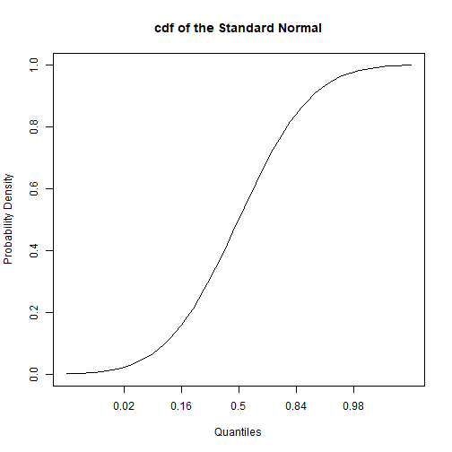
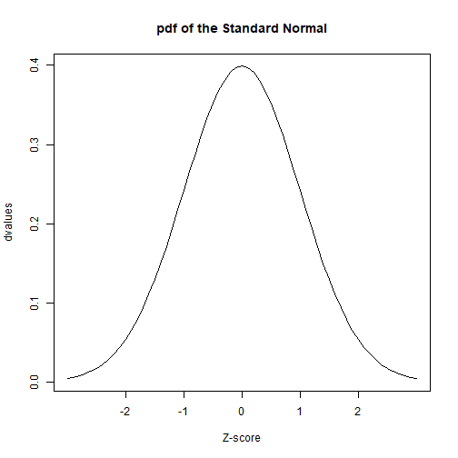
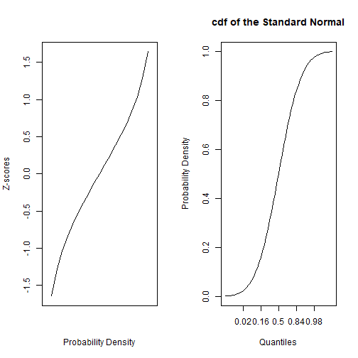
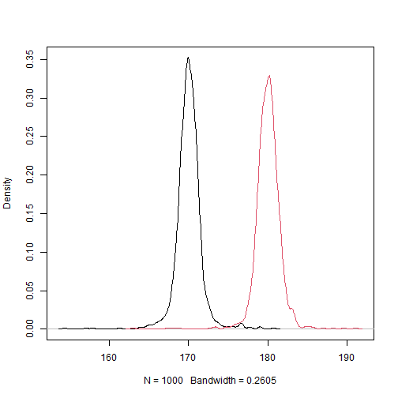
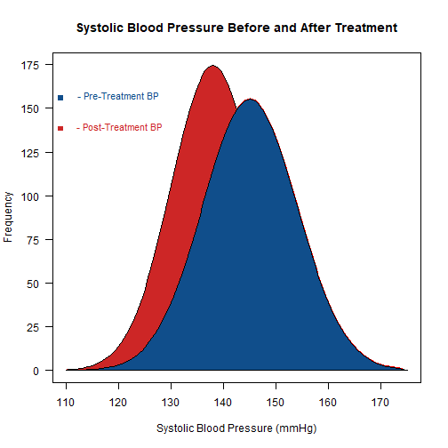
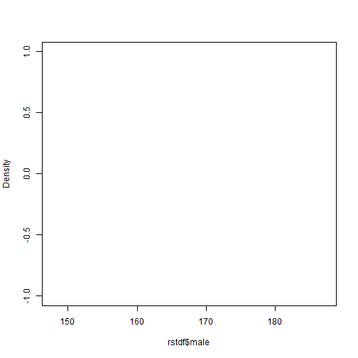
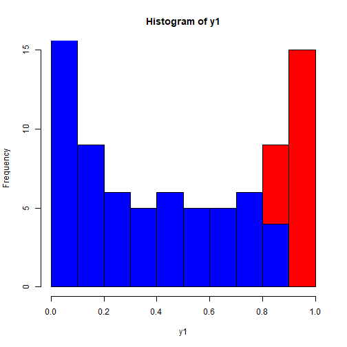
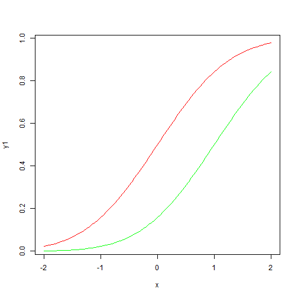
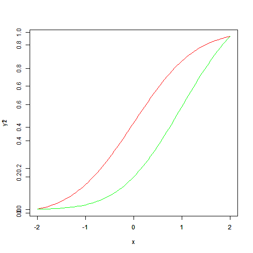

dnorm : PDF
pnorm : CDF
qnorm : inverse CDF
rnorm : random
z_scores <- seq(-3, 3, by = .1)
pvalues <- pnorm(z_scores)
# Now we'll plot these values
plot(pvalues, # Plot where y = values and x = index of the value in the vector
xaxt = "n", # Don't label the x-axis
type = "l", # Make it a line plot
main = "cdf of the Standard Normal",
xlab= "Quantiles",
ylab="Probability Density")
# These commands label the x-axis
axis(1, at=which(pvalues == pnorm(-2)), labels=round(pnorm(-2), 2))
axis(1, at=which(pvalues == pnorm(-1)), labels=round(pnorm(-1), 2))
axis(1, at=which(pvalues == pnorm(0)), labels=c(.5))
axis(1, at=which(pvalues == pnorm(1)), labels=round(pnorm(1), 2))
axis(1, at=which(pvalues == pnorm(2)), labels=round(pnorm(2), 2))
👍
axis下左上又(1,2,3,4)
第2個參數用的是要顯示的號碼值,對樣每個樣本點。
如果是x,y plot這個axis()無作用,這裡只用到Y。
z_scores <- seq(-3, 3, by = .1)
dvalues <- dnorm(z_scores)
plot(dvalues, # Plot where y = values and x = index of the value in the vector
xaxt = "n", # Don't label the x-axis
type = "l", # Make it a line plot
main = "pdf of the Standard Normal",
xlab= "Z-score")
# These commands label the x-axis
axis(1, at=which(dvalues == dnorm(0)), labels=c(0))
axis(1, at=which(dvalues == dnorm(1)), labels=c(-1, 1))
axis(1, at=which(dvalues == dnorm(2)), labels=c(-2, 2))
pnorm(2) ## [1] 0.9772499
#> [1] 0.9772499
pnorm(2, mean = 5, sd = 3) ## [1] 0.1586553
#> [1] 0.1586553
pnorm(2, mean = 5, sd = 3, lower.tail = FALSE)
#> [1] 0.8413447oldpar <- par()
par(mfrow=c(1,2))
z_scores <- seq(-3, 3, by = .1)
pvalues <- pnorm(z_scores)
quantiles <- seq(0, 1, by = .05)
qvalues <- qnorm(quantiles)
# Plot the z_scores
plot(qvalues,
type = "l", # We want a line graph
xaxt = "n", # No x-axis
xlab="Probability Density",
ylab="Z-scores")
# Same pnorm plot from before
plot(pvalues, # Plot where y = values and x = index of the value in the vector
xaxt = "n", # Don't label the x-axis
type = "l", # Make it a line plot
main = "cdf of the Standard Normal",
xlab= "Quantiles",
ylab="Probability Density")
# These commands label the x-axis
axis(1, at=which(pvalues == pnorm(-2)), labels=round(pnorm(-2), 2))
axis(1, at=which(pvalues == pnorm(-1)), labels=round(pnorm(-1), 2))
axis(1, at=which(pvalues == pnorm(0)), labels=c(.5))
axis(1, at=which(pvalues == pnorm(1)), labels=round(pnorm(1), 2))
axis(1, at=which(pvalues == pnorm(2)), labels=round(pnorm(2), 2))
| 身高 | 女生 | 男生 |
|---|---|---|
| 1 | 0 | |
| 平均 | 180 | 170 |
| 標準差 | 10 | 10 |
fn_num<-100
fh<-rnorm(fn_num,180,10)
fm<-rnorm(200-fn_num,170,10)
height<-c(fh,fm)
sex<-c(rep(1,fn_num),rep(0,200-fn_num))
r1<-tapply(height, sex,mean)
r1
#> 0 1
#> 169.2693 180.3127fn_num_set<-sample(1:199,1000,replace=T) #先抽出female的個數
rst<-matrix(rep(0,2000),ncol=2) #每一次抽樣男生/女生的平均值
for(idx in 1:1000)
{
fn_num <-fn_num_set[idx]
fh<-rnorm(fn_num,180,10)
fm<-rnorm(200-fn_num,170,10)
height<-c(fh,fm)
sex<-c(rep(1,fn_num),rep(0,200-fn_num))
r1<-tapply(height, sex,mean)
rst[idx,1]=r1[1]
rst[idx,2]=r1[2]
}
summary(rst)
#> V1 V2
#> Min. :154.4 Min. :162.9
#> 1st Qu.:169.2 1st Qu.:179.2
#> Median :170.0 Median :180.0
#> Mean :170.0 Mean :180.0
#> 3rd Qu.:170.8 3rd Qu.:180.8
#> Max. :180.7 Max. :191.1下面這個,好像在rmarkdown 畫不出來
unknown reason !!
alist<-list(rst[,1],rst[,2])
dinfo<-lapply(alist,density)
t1<-sapply(dinfo,function(item){range(item$x)})
rx<-range(t1)
t2<-sapply(dinfo,function(item){range(item$y)})
ry<-range(t2)
plot(dinfo[[1]], xlim = rx, ylim = ry, main = "")
for(i in 1:length(dinfo)) {
lines(dinfo[[i]], xlim = rx, ylim = ry, col = i)
} 
轉函數
總體而言，轉成函數的考慮就是如何避免hard coding。
plot.multi.density<-function (alist)
{
dinfo<-lapply(alist,density)#每組資料，求density
# 每組資料的x範圍
t1<-sapply(dinfo,function(item){range(item$x)})
rx<-range(t1)
# 每組資料的y範圍
t2<-sapply(dinfo,function(item){range(item$y)})
ry<-range(t2)
plot(dinfo[[1]],xlim = rx, ylim = ry, main = "")
for(i in 1:length(dinfo)) {
lines(dinfo[[i]],xlim = rx, ylim = ry, col = i)
}
} 討論：上面函數的限制？
第一個限制，先看看有沒有預設組別
問題：如果要加上區域顏色？
簡單一點的話，可以用選項type=“h”, (plot, line兩個函數都吃)
應用自己的函數
alist<-list(rst[,1],rst[,2])
plot.multi.density(alist)
上面的函數，預設參數是傳入使用者指定的list，裡面有使用者指定的組別
但是如果因為需要，發現傳入矩陣比較方便（例如每一個欄位代表每一組的模擬結果，那樣怎樣避免hard coding?
elist<-vector("list",ncol(rst))#指定大小的list,如果空集合elist<-list()
for(i in 1:ncol(rst)){
elist[[i]]<-rst[,i] #注意雙括號
}smThe sm package also includes a way of doing multiple density plots. The data must be in a data frame.
library(sm)
#> Package 'sm', version 2.2-5.6: type help(sm) for summary information
rstdf<-data.frame(rst)
colnames(rstdf)<-c("male","female")
sm.density.compare(rstdf$male, rstdf$female)
# Add a legend (the color numbers start from 2 and go up)
#legend("topright", levels(data$cond), fill=2+(0:nlevels(data$cond)))sm.density.compare(iris$Sepal.Length, iris$Species, xlab="Species")
title(main="Distributions of Species")
x <- seq(from = 110, to = 174, by = 0.5)
y1 <- dnorm(x, mean = 145, sd = 9)
y2 <- dnorm(x, mean = 138, sd = 8)
plot(x, y1, type="l", lwd=2, col="red",
main="Systolic Blood Pressure Before and After Treatment",
xlab = "Systolic Blood Pressure (mmHg)",
ylab = "Frequency", yaxt="n",
xlim = c(110, 175), ylim = c(0, 0.05))
lines(x, y2)
polygon(c(110,x,175),c(0,y2,0), col="firebrick3",
border = "black")
polygon(c(117,x,175),c(0,y1,0), col="dodgerblue4",
border = "black")
ylab=c(seq(from=0, to=175, by=25))
y=c(seq(from=0, to=0.05, length.out = 8))
axis(2,at=y,labels=ylab, las=1)#下左（2），在y向量上標ylab,las 文字和座標的角度
text(x = 120, y = 0.045, "- Pre-Treatment BP", col = "dodgerblue4", cex = 0.9)
text(x = 120, y = 0.04, " - Post-Treatment BP", col = "firebrick3", cex = 0.9)
points(109, 0.0445, pch = 15, col = "dodgerblue4")
points(109, 0.0395, pch = 15, col = "firebrick3")其他測試
x <- seq(-2, 2, 0.05)
y1 <- pnorm(x)
y2 <- pnorm(x,1,1)
plot(x,y1,type="l",col="red")
lines(x,y2,col="green")
plot( x, y1, type="l", col="red" )
par(new=TRUE)
plot( x, y2, type="l", col="green" )
note: add=TRUE 有時候不作用，例如plot
hist( y1 ,col="red" )
hist( y2, add=TRUE,col="blue" )